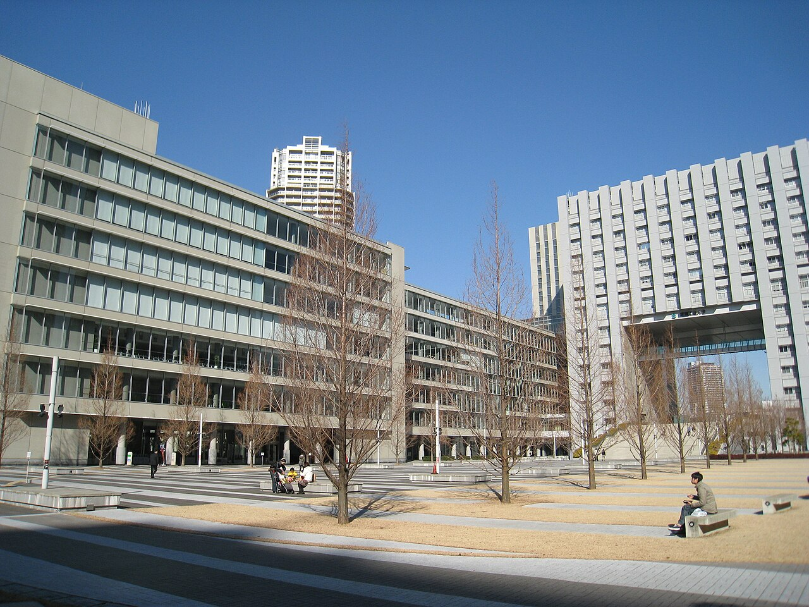

🌸芝浦工業大学に進学する富山県出身者のための男子学生寮
青雲寮（せいうんりょう）は、東京都府中市にある富山県出身の男子大学生専用の学生寮です。月額約5.1万円（居住費3万円＋食費1.6万円＋負担金0.5万円）という破格の料金で、食事付き、個室完備、セキュリティも万全な環境で、安心して大学生活を送ることができます。
豊洲と大宮の二拠点で授業がある理工系学生へ。青雲寮なら両キャンパスに通いやすい中間距離で、生活コストも抑えられます。
入寮時特待生制度について
富山県学生寮では、新入寮生を対象とした「入寮時特待生制度」を実施いたします。選考により特待生に認定された方には、入寮費（5万円）と1年目の寮費半額（18万円）の合計23万円が免除（返金）されます。
詳細は入寮生の募集についてをご覧ください。
🏠 格安の寮費
月額約5.1万円（居住費3万円＋食費1.6万円＋負担金0.5万円）。東京の一人暮らしと比べて圧倒的にお得！
🍱 栄養満点の食事
朝夕2食付き。栄養バランスの取れた温かい食事を提供
🔒 安心のセキュリティ
24時間管理体制で、初めての東京生活も安心
🚃 好立地
府中市の閑静な住宅街。都内主要大学へアクセス良好
✨芝浦工業大学の通学アクセスと家賃比較で選ばれる理由


🚇 通学時間・アクセス
豊洲キャンパスへ約60〜75分、大宮キャンパスへ約75〜95分。都心と埼玉方面の双方に出やすいです。
💰 固定費の圧縮
豊洲の高額家賃帯を避け、寮費込みで研究費・制作費を確保できます。
🤝 同郷コミュニティ
富山県出身の先輩・同期が履修や就活、生活情報を共有します。上京後も安心して相談できます。
📚 学習環境
個室・Wi-Fi・学習室完備。朝夕2食付きで、課題や制作、研究に集中できます。
🚇通学アクセス詳細
豊洲キャンパス
ルート: 東府中 → 新宿（京王線）→ 汐留/豊洲（大江戸線・ゆりかもめ/有楽町線）
所要時間: 約60〜75分
特徴: ルートを選択可能。朝ラッシュは時間調整がおすすめ。
大宮キャンパス
ルート: 東府中 → 新宿（京王線）→ 池袋（山手線）→ 大宮（埼京線/湘南新宿ライン）
所要時間: 約75〜95分
特徴: 長めの移動だが乗換2回。資料作成時間として活用しやすいです。
💴費用比較（一人暮らし vs 青雲寮）
豊洲・大宮周辺での一人暮らしと寮生活の月額比較です。
一人暮らし
（個室）
※ 豊洲周辺のワンルーム相場（管理費込）との比較例
| 項目 | 一人暮らし（目安） | 青雲寮（特待生） | 備考 |
|---|---|---|---|
| 家賃（月額） | 70,000円〜 | 15,000円 | 個室・家具付き |
| 食費（月額） | 30,000円〜 | 23,000円 | 朝夕2食付き（日曜祝日除く） |
| 光熱水費 | 10,000円〜 | 寮費に含む | |
| 通信費 | 5,000円〜 | 寮費に含む | Wi-Fi完備 |
| 月額合計 | 115,000円〜 | 36,000円 | 毎月約7万円の差 |
📖寮生活のイメージ


タイムスケジュール例
- 06:50 起床・朝食
- 07:40 通学（新宿経由で豊洲または大宮方面へ）
- 09:00 授業・演習
- 12:00 昼食
- 13:00 ゼミ・実験・制作
- 18:30 帰寮・夕食
- 20:00 自室や学習室で課題・作品・資格勉強
- 23:30 就寝
🧭芝浦工業大学の寮・一人暮らしを考える保護者・受験生・高校生へ
芝浦工業大学は豊洲・大宮・芝浦の3キャンパスを持ち、所属学科や学年によって通学先が変わります。豊洲は最も都心に近く家賃が高いエリアで、大宮は埼玉県と距離があるため、どちらに近い住まいを選んでも一方への通学が長くなりがちです。
青雲寮（東府中）は豊洲へ約60〜75分、大宮へ約75〜95分と、両方のキャンパスに対して中間距離の立地です。キャンパス情報や大学寮制度は更新があるため、大学公式サイトもあわせて確認してください。
保護者が確認したい点
豊洲周辺のワンルームは管理費込みで8〜10万円を超えることも多く、4年間の家賃総額は400万円以上になるケースがあります。青雲寮なら毎月約7万円を節約でき、食事・光熱費・Wi-Fiも込みで安心して管理できます。理工系の実験・課題で帰宅が遅くなっても、食事が用意されている点も保護者にとって大きなメリットです。
受験生が比較したい点
芝浦工業大学の実験・制作課題は学年が上がるほど増加します。豊洲近くに住んで大宮方面へ通う場合や、その逆のパターンでも、青雲寮なら両方に通学しやすいバランスの良い位置です。食事付き・個室で研究に集中できる環境を整えられます。
高校生が先に知りたい点
理工系のエンジニアを目指す学習では、実験レポートや設計課題で夜遅くなることが多くなります。自炊の手間を省き、栄養バランスの取れた食事が用意されている青雲寮なら、研究・設計と体調管理を両立しやすい環境です。
❓よくある質問
Q. 通学時間はどのくらいですか？
A. 豊洲は約60〜75分、大宮は約75〜95分が目安です。芝浦キャンパスへは豊洲より少し手前で乗降するため、ほぼ同程度の時間です。
Q. 家賃差はどのくらいありますか？
A. 豊洲周辺のワンルームは管理費込みで8〜10万円超が相場です。寮費＋食費込みで毎月約7万円以上の差が出るケースが多く、4年間では約336万円の節約になります。
Q. 食事や光熱費は含まれますか？
A. 朝夕2食（日曜祝日除く）、光熱費、Wi-Fiが寮費に含まれます（詳細は募集要項をご確認ください）。
Q. 芝浦工業大学の公式寮と青雲寮はどう違いますか？
A. 芝浦工業大学の公式寮は食事が付かないため、自炊・外食費が別途かかります。青雲寮は朝夕2食付きで月額約5.1万円が目安。光熱費・Wi-Fiも含まれ、生活費の見通しが立てやすいです。
Q. 実験・課題で帰宅が遅くなる日もあります。対応できますか？
A. 事前連絡があれば柔軟に対応しています。実験が長引く日も、帰宅後に食事を取れるよう配慮されています。理工系の実験スケジュールに慣れた先輩寮生も多く、生活リズムの相談もできます。
Q. 学部によって通学先や住まいの考え方は変わりますか？
A. 芝浦工業大学は学年や所属で利用キャンパスが変わることがあります。青雲寮は豊洲・大宮・芝浦のいずれにも通学しやすい立地のため、配属先が変わっても引っ越し不要で対応できます。
富山県出身で芝浦工業大学を目指す皆さんへ
二拠点通学の負担を減らせる青雲寮をご検討ください。
見学も随時受け付けています。